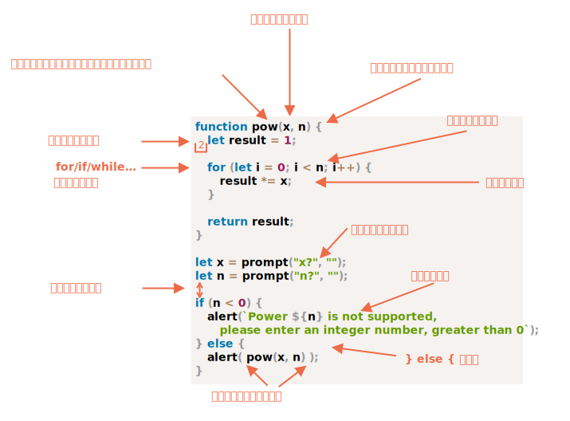

我们的代码必须尽可能的清晰和易读。
这实际上是一种编程艺术 —— 以一种正确并且人们易读的方式编码来完成一个复杂的任务。一个良好的代码风格大大有助于实现这一点。
下面是一个备忘单，其中列出了一些建议的规则（详情请参阅下文）：

现在，让我们详细讨论一下这些规则和它们的原因吧。
没有什么规则是“刻在石头上”的。这些是风格偏好，而不是宗教教条。在大多数的 JavaScript 项目中，花括号以 "Egyptian" 风格（译注："egyptian" 风格又称 K&R 风格 — 代码段的开括号位于一行的末尾，而不是另起一行的风格）书写，左花括号与相应的关键词在同一行上 — 而不是新起一行。左括号前还应该有一个空格，如下所示：
if (condition) {
// do this
// ...and that
// ...and that
}单行构造（如 if (condition) doSomething()）也是一个重要的用例。我们是否应该使用花括号？如果是，那么在哪里？
下面是这几种情况的注释，你可以自己判断一下它们的可读性：
if (n < 0) *!*{*/!*alert(`Power ${n} is not supported`);*!*}*/!*if (n < 0)
alert(`Power ${n} is not supported`);if (n < 0) alert(`Power ${n} is not supported`);if (n < 0) {
alert(`Power ${n} is not supported`);
}对于很短的代码，写成一行是可以接受的：例如 if (cond) return null。但是代码块（最后一个示例）通常更具可读性。
没有人喜欢读一长串代码，最好将代码分割一下。
例如：
// 回勾引号 ` 允许将字符串拆分为多行
let str = `
ECMA International's TC39 is a group of JavaScript developers,
implementers, academics, and more, collaborating with the community
to maintain and evolve the definition of JavaScript.
`;对于 if 语句：
if (
id === 123 &&
moonPhase === 'Waning Gibbous' &&
zodiacSign === 'Libra'
) {
letTheSorceryBegin();
}一行代码的最大长度应该在团队层面上达成一致。通常是 80 或 120 个字符。
有两种类型的缩进：
水平方向上的缩进：2 或 4 个空格。
一个水平缩进通常由 2 或 4 个空格或者 "Tab" 制表符（key key:Tab）构成。选择哪一个方式是一场古老的圣战。如今空格更普遍一点。
选择空格而不是 tabs 的优点之一是，这允许你做出比 “Tab” 制表符更加灵活的缩进配置。
例如，我们可以将参数与左括号对齐，像下面这样：
show(parameters,
aligned, // 左边有 5 个空格
one,
after,
another
) {
// ...
}垂直方向上的缩进：用于将代码拆分成逻辑块的空行。
即使是单个函数通常也被分割为数个逻辑块。在下面的示例中，初始化的变量、主循环结构和返回值都被垂直分割了：
function pow(x, n) {
let result = 1;
// <--
for (let i = 0; i < n; i++) {
result *= x;
}
// <--
return result;
}插入一个额外的空行有助于使代码更具可读性。写代码时，不应该出现连续超过 9 行都没有被垂直分割的代码。
每一个语句后面都应该有一个分号。即使它可以被跳过。
有一些编程语言的分号确实是可选的，那些语言中也很少使用分号。但是在 JavaScript 中，极少数情况下，换行符有时不会被解释为分号，这时代码就容易出错。更多内容请参阅 info:structure#semicolon 一章的内容。
如果你是一个有经验的 JavaScript 程序员，你可以选择像 StandardJS 这样的无分号的代码风格。否则，最好使用分号以避免可能出现的陷阱。大多数开发人员都应该使用分号。
尽量避免代码嵌套层级过深。
例如，在循环中，有时候使用 continue 指令以避免额外的嵌套是一个好主意。
例如，不应该像下面这样添加嵌套的 if 条件：
for (let i = 0; i < 10; i++) {
if (cond) {
... // <- 又一层嵌套
}
}我们可以这样写：
for (let i = 0; i < 10; i++) {
if (!cond) *!*continue*/!*;
... // <- 没有额外的嵌套
}使用 if/else 和 return 也可以做类似的事情。
例如，下面的两个结构是相同的。
第一个：
function pow(x, n) {
if (n < 0) {
alert("Negative 'n' not supported");
} else {
let result = 1;
for (let i = 0; i < n; i++) {
result *= x;
}
return result;
}
}第二个：
function pow(x, n) {
if (n < 0) {
alert("Negative 'n' not supported");
return;
}
let result = 1;
for (let i = 0; i < n; i++) {
result *= x;
}
return result;
}但是第二个更具可读性，因为 n < 0 这个“特殊情况”在一开始就被处理了。一旦条件通过检查，代码执行就可以进入到“主”代码流，而不需要额外的嵌套。
如果你正在写几个“辅助”函数和一些使用它们的代码，那么有三种方式来组织这些函数。
在调用这些函数的代码的 上方 声明这些函数：
// *!*函数声明*/!*
function createElement() {
...
}
function setHandler(elem) {
...
}
function walkAround() {
...
}
// *!*调用函数的代码*/!*
let elem = createElement();
setHandler(elem);
walkAround();先写调用代码，再写函数
// *!*调用函数的代码*/!*
let elem = createElement();
setHandler(elem);
walkAround();
// --- *!*辅助函数*/!* ---
function createElement() {
...
}
function setHandler(elem) {
...
}
function walkAround() {
...
}混合：在第一次使用一个函数时，对该函数进行声明。
大多数情况下，第二种方式更好。
这是因为阅读代码时，我们首先想要知道的是“它做了什么”。如果代码先行，那么在整个程序的最开始就展示出了这些信息。之后，可能我们就不需要阅读这些函数了，尤其是它们的名字清晰地展示出了它们的功能的时候。
风格指南包含了“如果编写”代码的通用规则，例如：使用哪个引号、用多少空格来缩进、一行代码最大长度等非常多的细节。
当团队中的所有成员都使用相同的风格指南时，代码看起来将是统一的。无论是团队中谁写的，都是一样的风格。
当然，一个团队可以制定他们自己的风格指南，但是没必要这样做。现在已经有了很多制定好的代码风格指南可供选择。
一些受欢迎的选择：
如果你是一个初学者，你可以从本章中上面的内容开始。然后你可以浏览其他风格指南，并选择一个你最喜欢的。
检查器（Linters）是可以自动检查代码样式，并提出改进建议的工具。
它们的妙处在于进行代码风格检查时，还可以发现一些代码错误，例如变量或函数名中的错别字。因此，即使你不想坚持某一种特定的代码风格，我也建议你安装一个检查器。
下面是一些最出名的代码检查工具：
它们都能够做好代码检查。我使用的是 ESLint。
大多数检查器都可以与编辑器集成在一起：只需在编辑器中启用插件并配置代码风格即可。
例如，要使用 ESLint 你应该这样做：
npm install -g eslint 命令（npm 是一个 JavaScript 包安装工具）安装 ESLint。.eslintrc 的配置文件。下面是一个 .eslintrc 文件的例子：
{
"extends": "eslint:recommended",
"env": {
"browser": true,
"node": true,
"es6": true
},
"rules": {
"no-console": 0,
"indent": ["warning", 2]
}
}这里的 "extends" 指令表示我们是基于 "eslint:recommended" 的设置项而进行设置的。之后，我们制定我们自己的规则。
你也可以从网上下载风格规则集并进行扩展。有关安装的更多详细信息，请参见 http://eslint.org/docs/user-guide/getting-started。
此外，某些 IDE 有内置的检查器，这非常方便，但是不像 ESLint 那样可自定义。
本章描述的（和提到的代码风格指南中的）所有语法规则，都旨在帮助你提高代码可读性。它们都是值得商榷的。
当我们思考如何写“更好”的代码的时候，我们应该问自己的问题是：“什么可以让代码可读性更高，更容易被理解？”和“什么可以帮助我们避免错误？”这些是我们讨论和选择代码风格时要牢记的主要原则。
阅读流行的代码风格指南，可以帮助你了解有关代码风格的变化趋势和最佳实践的最新想法。